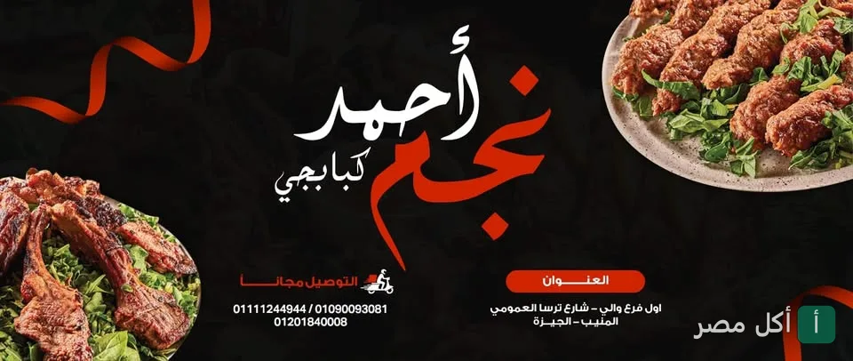

سوبر توفير 1
1/4 فراخ شواية + أرز + خضار مع السلطات والعيش
120 جنيه

الأسعار بالجنيه المصري من صفحة أكل مصر (آخر تحديث معلن: ٣١ أغسطس ٢٠٢٦). أكد السعر مع المطعم عند الطلب.
1/4 فراخ شواية + أرز + خضار مع السلطات والعيش
120 جنيه
1/4 فراخ شواية + 3 ق كفته + أرز مع السلطات والعيش
150 جنيه
3 ق كفته + 3 ق شيش الفحم + أرز مع السلطات والعيش
130 جنيه
3 ق بانيه مشوي + 3 ق شيش الفحم + أرز مع السلطات والعيش
130 جنيه
3 ق كفته + 2 ق طرب + 3 ق سجق + أرز مع السلطات والعيش
150 جنيه
2 ق كفته + 2 ق طرب + 2 ق شيش + أرز مع السلطات والعيش
150 جنيه
3 ق كفته + 2 ق بانيه + 2 ق شيش + أرز مع السلطات والعيش
150 جنيه
2 ق طرب + 3 ق سجق + 4 ق حواوشي + أرز مع السلطات والعيش
170 جنيه
3 ق كباب ضاني + 3 ق كفته + 3 ق سجق + حواوشي
280 جنيه
فرد حمام محشي + 2 ق كباب ضاني + 3 ق كفته
300 جنيه
3 ق شيش على الفحم + 3 ق كباب ضاني + 3 ق كفته
250 جنيه
12 ق كفتة + 5 قطع فراخ شيش على الفحم + 6 قطع سجق + 10 محشي + ارز بسمتي + السلطات والعيش
620 جنيه
12 ق كفته + 1/4 شيش على الفحم + 1/4 سجق + 4 ق بانيه + 15 ورق عنب + 10 ق محشي + ارز بسمتي + السلطات والعيش
750 جنيه
12 ق كفته + 4 ق طرب + 10 ق فراخ شيش على الفحم + 1/4 سجق + 15 ورق عنب + 10 محشي + ارز بسمتي + السلطات والعيش
950 جنيه
24 ق كفته + 8 ق طرب + 10 ق فراخ شيش على الفحم + 1/4 كباب + 1/4 سجق + 15 ورق عنب + 10 محشي + ارز بسمتي + السلطات والعيش
1 جنيه
24 ق كفته + 8 ق طرب + ك شيش على الفحم + 1/2 سجق + 30 ورق عنب + 10 محشي + ارز بسمتي + السلطات والعيش
1 جنيه
3 فرد حمام + فراخ مشوية + 18 ق كفته + 10 ق شيش على الفحم + 1/2 سجق + 15 ورق عنب + 10 محشي + ارز بسمتي + السلطات والعيش
1 جنيه
موزة ضاني مع الأرز + 4 ق طرب + 6 ق كفته + 6 ق سجق
720 جنيه
1 جنيه
1 جنيه
800 جنيه
700 جنيه
350 جنيه
350 جنيه
700 جنيه
480 جنيه
400 جنيه
480 جنيه
460 جنيه
300 جنيه
300 جنيه
300 جنيه
300 جنيه
420 جنيه
420 جنيه
180 جنيه
180 جنيه
180 جنيه
200 جنيه
180 جنيه
180 جنيه
60 جنيه
65 جنيه
60 جنيه
65 جنيه
130 جنيه
100 جنيه
45 جنيه
40 جنيه
50 جنيه
60 جنيه
60 جنيه
10 جنيه
60 جنيه
180 جنيه
40 جنيه
50 جنيه
25 جنيه
30 جنيه
30 جنيه
35 جنيه
35 جنيه
20 جنيه
35 جنيه
7 جنيه
7 جنيه
7 جنيه
5 جنيه
7 جنيه
10 جنيه
الأصناف والأسعار من صفحة أكل مصر المنشورة. أكد تفاصيل طلبك والسعر مع المطعم عند الاتصال.